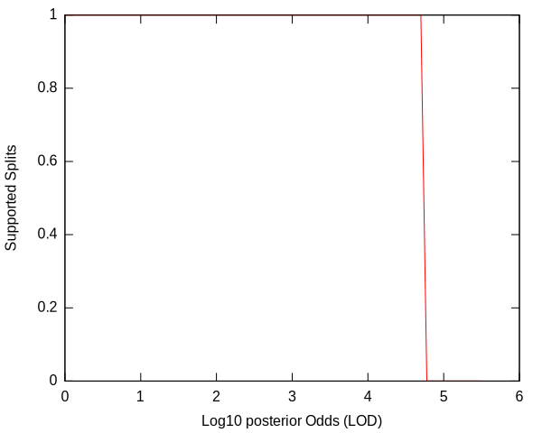
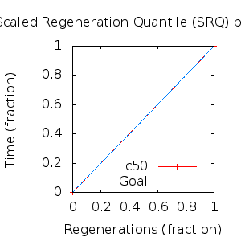
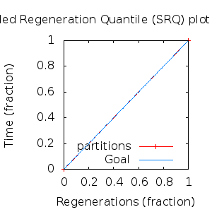

MCMC Post-hoc Analysis: 4 sequences
Data & Model
| Partition | Sequences | Lengths | Alphabet | Substitution Model | Indel Model | Scale Model |
|---|
| 1 |
E5_alpha1_aa_reduced.fas |
72 - 78 |
Amino-Acids | S1 = lg08+f |
I1 = rs07 |
scale1 ~ gamma[0.5,2] |
Scalar variables
| Statistic | Median | 95% BCI | ACT | ESS | burnin | PSRF-CI80% | PSRF-RCF |
|---|
| prior |
-58.54 |
(-71.83, -46.84) |
39.34 |
6863 |
262
|
1 | 0.9979
|
| prior_A1 |
-33.89 |
(-41.11, -24.58) |
1.474 |
183201 |
104
|
1 | 0.9981
|
| likelihood |
-527.2 |
(-537.7, -519.2) |
4.955 |
54490 |
132
|
1 | 0.9999
|
| posterior |
-586.3 |
(-600.2, -573.9) |
35.86 |
7528 |
465
|
0.9999 | 0.9992
|
| Heat.beta |
1 |
| | | | | |
| Scale[1] |
1.343 |
(0.3419, 3.557) |
1.047 |
257945 |
73
|
1 | 0.999
|
| f:pi[A] |
0.06208 |
(0.02989, 0.1002) |
8.147 |
33142 |
132
|
1 | 1.002
|
| f:pi[R] |
0.02014 |
(0.001983, 0.04729) |
9.106 |
29651 |
774
|
0.9998 | 0.9957
|
| f:pi[N] |
0.01857 |
(0.002216, 0.04387) |
9.03 |
29901 |
498
|
0.9997 | 1.003
|
| f:pi[D] |
0.01769 |
(0.0006813, 0.04659) |
10.31 |
26186 |
375
|
0.9999 | 1.004
|
| f:pi[C] |
0.05754 |
(0.02604, 0.09501) |
8.093 |
33363 |
251
|
1 | 1.002
|
| f:pi[Q] |
0.01824 |
(0.001881, 0.043) |
9.566 |
28224 |
440
|
1 | 1.002
|
| f:pi[E] |
0.01426 |
(0.0004386, 0.03957) |
10.07 |
26819 |
716
|
1.001 | 0.9959
|
| f:pi[G] |
0.01331 |
(0.0004401, 0.03729) |
10.05 |
26862 |
469
|
0.9995 | 1.006
|
| f:pi[H] |
0.05085 |
(0.02045, 0.08879) |
8.283 |
32598 |
492
|
0.9996 | 1.002
|
| f:pi[I] |
0.08742 |
(0.05361, 0.1256) |
7.853 |
34381 |
283
|
0.9997 | 1.003
|
| f:pi[L] |
0.158 |
(0.1064, 0.2123) |
7.2 |
37499 |
229
|
1 | 1
|
| f:pi[K] |
0.005566 |
(5.602e-07, 0.02402) |
13.09 |
20629 |
594
|
1 | 1
|
| f:pi[M] |
0.04234 |
(0.01947, 0.07112) |
7.96 |
33919 |
356
|
1 | 1.002
|
| f:pi[F] |
0.08939 |
(0.05258, 0.1335) |
7.334 |
36817 |
629
|
1 | 0.9999
|
| f:pi[P] |
0.03773 |
(0.009961, 0.07527) |
8.378 |
32228 |
715
|
1 | 1.001
|
| f:pi[S] |
0.04593 |
(0.01784, 0.0797) |
8.041 |
33577 |
461
|
0.9998 | 1
|
| f:pi[T] |
0.04497 |
(0.01794, 0.0788) |
8.465 |
31897 |
253
|
1 | 1.002
|
| f:pi[W] |
0.02352 |
(0.004855, 0.0504) |
9.101 |
29666 |
464
|
1 | 1.001
|
| f:pi[Y] |
0.03873 |
(0.01518, 0.06815) |
7.823 |
34512 |
336
|
1 | 0.9993
|
| f:pi[V] |
0.1153 |
(0.07329, 0.1635) |
7.737 |
34899 |
528
|
1 | 0.9953
|
| rs07:mean_length |
6.307 |
(1.727, 17.23) |
2.725 |
99068 |
131
|
1 | 1.002
|
| rs07:log_rate |
-3.954 |
(-4.854, -3.089) |
1.224 |
220557 |
89
|
0.9999 | 0.9984
|
| |A1| |
82 |
(80, 87) |
2.34 |
115394 |
61 |
0.8 | 0.9996
|
| #indels1 |
4 |
(3, 5) |
1.392 |
194004 |
54 |
0 | 0.9997
|
| |indels1| |
16 |
(9, 24) |
1.784 |
151359 |
70 |
0.8889 | 0.9994
|
| #substs1 |
72 |
(70, 76) |
1.798 |
150171 |
37 |
0.6667 | 1
|
| Scale1*|T| |
1.339 |
(0.9984, 1.714) |
2.02 |
133692 |
132
|
1 | 0.9999
|
| |A| |
82 |
(80, 87) |
2.34 |
115394 |
61 |
0.8 | 0.9996
|
| #indels |
4 |
(3, 5) |
1.392 |
194004 |
54 |
0 | 0.9997
|
| |indels| |
16 |
(9, 24) |
1.784 |
151359 |
70 |
0.8889 | 0.9994
|
| #substs |
72 |
(70, 76) |
1.798 |
150171 |
37 |
0.6667 | 1
|
| |T| |
0.9996 |
(0.2131, 2.308) |
1 |
270003 |
73
|
1 | 0.9979
|
Phylogeny Distribution


Alignment Distribution
Partition 1
|
|
|
Diff |
|
Min. %identity |
# Sites |
Constant |
Informative |
| Initial |
FASTA |
HTML |
Diff |
|
7.69% |
78 |
3 (3.85%) |
2 (2.56%) |
| Best (WPD) |
FASTA |
HTML |
|
AU |
46.2% |
82 |
27 (32.9%) |
5 (6.1%) |
Mixing
Statistics: | scalar burnin | 774 | | scalar ESS | 6864 | | topological ESS | | | ASDSF | NA | | MSDSF | NA | | PSRF CI80% | 1.001 | | PSRF RCF | 1.006 |
|  |
Analysis
directory: /work/awillemsen/bali-phy/AlphaPVs_E5_aa_new_reduced
version: 3.3
| chain # | burnin | subsample | Iterations (after burnin) | command line | subdirectory |
|---|
| 1 |
10000 |
1 |
90000 |
bali-phy E5_alpha1_aa_reduced.fas -s 82738 --smodel lg08 -i 100000 -n AlphaPVs_E5_red_alpha1 |
AlphaPVs_E5_red_alpha1-1 |
| 2 |
10000 |
1 |
90000 |
bali-phy E5_alpha1_aa_reduced.fas -s 83452 --smodel lg08 -i 100000 -n AlphaPVs_E5_red_alpha1 |
AlphaPVs_E5_red_alpha1-2 |
| 3 |
10000 |
1 |
90000 |
bali-phy E5_alpha1_aa_reduced.fas -s 52315 --smodel lg08 -i 100000 -n AlphaPVs_E5_red_alpha1 |
AlphaPVs_E5_red_alpha1-3 |
| P(data|M) = -537.082 +- 0.078
|
Complete sample: 3
topologies |
95% Bayesian credible interval: 2 topologies |
Model and priors
Tree (+priors)
| topology | ~ uniform on tree topologies |
| branch lengths | ~ iid[num_branches[T],gamma[0.5,div[2,num_branches[T]]]] |
Substitution model (+priors)
| S1 | = |
lg08+f
| f:pi | ~ | dirichlet_on[letters[@a],1]
|
|
Indel model (+priors)
| I1 | = |
rs07
| rs07:log_rate | ~ | laplace[-4,0.707]
|
| rs07:mean_length | ~ | exponential[10,1]
|
|
Scales (+priors)
{kind=link}
{kind=link}
{kind=link}
{kind=link}
{kind=link}
{kind=link}
{kind=link}
{kind=link}